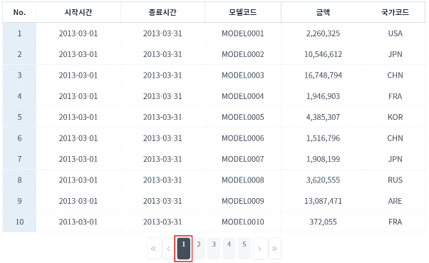
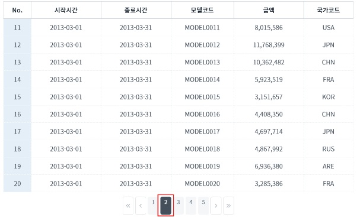
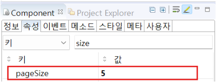
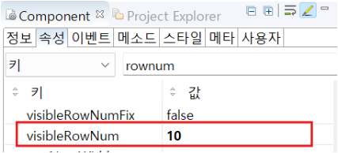
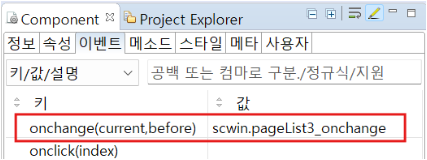

PageList의 'onchange' 이벤트를 사용하여 GridView와 연동한 예제입니다. GridView 하단의 페이지 번호가 변경될 때마다 GridView의 data가 변경됩니다. 예제의 초기 설정은 다음과 같습니다.
연결된 DataList 행의 수 : '120'
화면에 표시할 페이지 수('pageSize' 속성) : '5'
전체 페이지 수 : '12'
선택된 페이지 : '1'
GridView와 연동하기
1
STEP 1: 초기 상태를 확인합니다.
1번 페이지가 선택되어 있고, GridView에 10개 행의 data가 표시됩니다.
Image 1.브라우저(Chrome) 실행 예시

2
STEP 2: 다음 페이지를 클릭합니다.
2번 페이지가 선택되고, GridView의 data가 다음 장으로 넘어갑니다.
Image 2.브라우저(Chrome) 실행 예시

[필수] pageSize="설정 값" //화면에 표시할 페이지의 수
예시) pageSize="5" //화면에 보여질 페이지의 수를 5개로 설정
Image 3.웹스퀘어 스튜디오의 Component View - 속성 설정 예시

Example 1.Source
<!-- pageList 의 소스 본문 예시 --> <w2:pageList pageSize="5"> <!-- 중략 --> </w2:pageList>
[필수] visibleRowNum="설정 값" //화면에 표시할 그리드 행의 수
예시) visibleRowNum="10" //화면에 보여질 그리드 행의 수를 10개 행으로 설정
Image 4.웹스퀘어 스튜디오의 Component View - 속성 설정 예시

Example 2.Source
<!-- pageList 의 소스 본문 예시 --> <w2:pageList pageSize="5"> <!-- 중략 --> </w2:pageList>
pageList와 연계하기 위해, 속성 visibleRowNum에 설정한 값을 전역변수로 선언하여 사용합니다.
Example 3.Script
//예제 파일의 스크립트 "scwin.onpageload"를 참고하세요. //GridView 행의 수를 전역변수로 선언 scwin.gridRowCount = 10;
PageList의 'onchange' 이벤트에 메소드를 설정하고 설정한 메소드를 정의합니다.
세부 설정은 아래의 예시에 작성되어 있습니다.
Image 5.웹스퀘어 스튜디오의 Component View - 이벤트 예시

Example 4.Script
// 페이지가 변경될 때, 연결된 dataList를 업데이트 하는 함수입니다. // - current : 현재 page의 번호 // - before : 이전에 선택되었던 page의 번호 scwin.pageList3_onchange = function(current,before){ console.log("pageList3_onchange, current = " + current + ", before = " + before); var start ; var end; var getJson; // 현재 페이지에 맞는 데이터 범위를 지정하고, 연결된 dataList에 업데이트 하는 부분입니다. start = (current-1)*scwin.gridRowCount; //시작 인덱스 end = start+scwin.gridRowCount-1; //끝 인덱스 getJson = dataList3.getRangeJSON(start, end); //범위에 해당하는 데이터를 dataList에 세팅 dataList1.setJSON(getJson); // dataList를 업데이트하여 화면에 표시 // 행 번호 설정 gridView3.setStartRowNumber((current-1)*scwin.gridRowCount); };
Example 5.Source
<w2:pageList id="pageList3" ev:onchange="scwin.pageList3_onchange"> <!-- 중략 --> </w2:pageList>
onchange(current, before)
setStartRowNumber(rowIndex)
[pageList] pageSize
[gridView] visibleRowNum